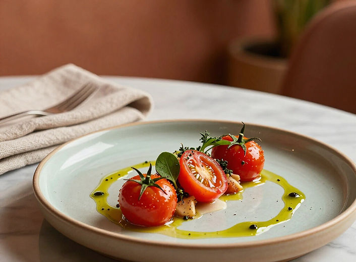
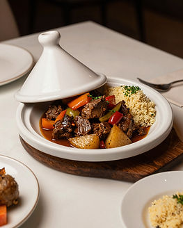
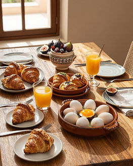
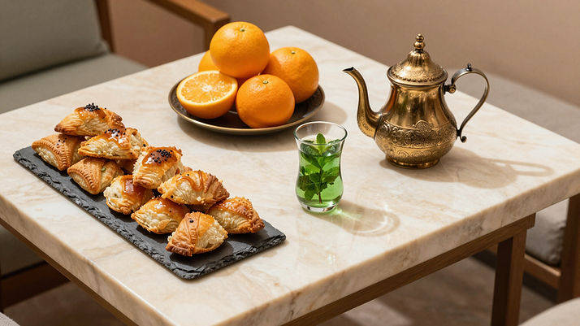
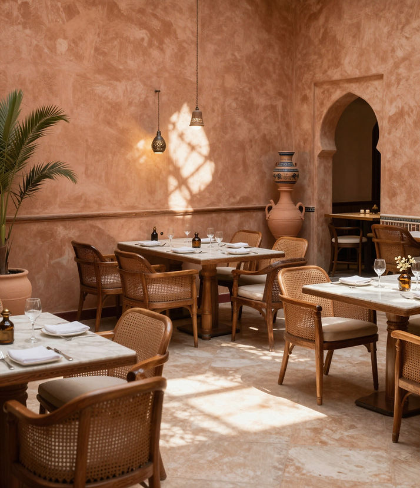

03 — La table
Mara Gourmet
La chaleur marocaine et la finesse méditerranéenne, dans un même geste.
La chaleur marocaine et la finesse méditerranéenne, dans un même geste.
Notre chef compose une carte vivante, rythmée par les saisons et les produits des fermes de la région. Légumes gorgés de soleil, herbes fraîches, épices nobles.
Une cuisine saine et généreuse, pensée autant pour l'athlète qui récupère que pour le gourmet qui s'attable. À déguster sous les palmiers du patio, ou face aux courts.
Réserver une table →
Cuisine de saison



L'heure du théAnniversaires, dîners privés, tournois d'entreprise : nous composons des expériences sur mesure, du cocktail au bord des courts au dîner étoilé sous les palmiers.
Organiser un événement →